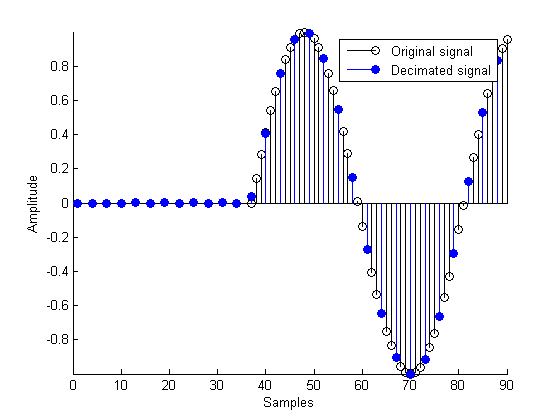

This demonstrates how to decrease the sampling rate of a signal using FIR decimators from the Filter Design Toolbox.
See also mfiltgettingstarteddemo.m
The Filter Design Toolbox supports different structures to perform decimation including different FIR-based structures and CICs. Typing "helpwin mfilt" gives you a list of all supported structures.
M = 3; % Decimation factor
Most decimators are created in the same way. One must specify first the decimation factor M and then the FIR filter coefficients. If no filter coefficients are given, a lowpass filter is designed for you with a cutoff frequency of pi/M and a gain of 1. For example, we created a Direct-Form Polyphase FIR Decimator. The filter coefficients stored in the Numerator property can be changed. See the FIRHALFBAND, FIRNYQUIST, FIREQINT and INTFILT functions to design decimation filters.
h1 = mfilt.firdecim(M); % Default filter
To change the sampling rate of a signal by a fractional factor, one can use a Direct-Form FIR Polyphase Sample-Rate Converter. This structure uses L polyphase subfilters.
L = 2; % Interpolation factor
h2 = mfilt.firsrc(L,M);
When decimating signals whose length is not a multiple of the decimation factor M, the last samples (1 to M-1) are stored in the 'NonProcessedSamples' property. For example:
x=1:11; y=filter(h1,x)
y =
1.0e-003 *
0 -0.2811 0.4515
The last two values of the input signal are stored in the 'NonProcessedSamples' property.
npsamples=h1.NonProcessedSamples
npsamples =
10
11
Storing non-processed samples in the object allows to stop filtering a signal at any point and start over from there (provided that the 'ResetBeforeFiltering' property is 'off'). Breaking up a signal in sections of arbitrary length is equivalent to filtering the entire signal at once:
xtot=[x,x]; ytot=filter(h1,xtot)
ytot =
0 -0.0003 0.0005 -0.0014 0.0028 -0.0054 0.0092
reset(h1); % Clear history of the filter h1.ResetBeforeFiltering='off'; ysec=[filter(h1,x) filter(h1,x)]
ysec =
0 -0.0003 0.0005 -0.0014 0.0028 -0.0054 0.0092
We verify that ysec(signal filtered by sections) is equal to ytot (entire signal filtered at once).
The input signal x[n] is a 1 kHz sinusoid sampled at 44.1 kHz.
N = 159; Fs = 44.1e3; n = 0:N-1; x = sin(2*pi*n*1e3/Fs);
Filter with a Direct-Form FIR Polyphase Decimator.
reset(h1) y1 = filter(h1,x);
For further information about the filtering options in general and how to specify initial conditions in particular, see the "Getting started with multirate filter (MFILT) objects" demo.
The length of the transient response of the decimator is equal to half the order of a polyphase subfilter. This is also the group-delay of the filter.
delay = mean(grpdelay(h1)); % Constant group delay equal to its mean
tx = delay+[1:length(x)];
ty = 1:M:M*length(y1);
Display the output of the Direct-Form FIR Polyphase Decimator and overlay a shifted version of the original signal.
stem(tx,x,'k');hold on;stem(ty,y1,'filled'); axis([0 90 -Inf Inf]) legend('Original signal','Decimated signal') xlabel('Samples'); ylabel('Amplitude');